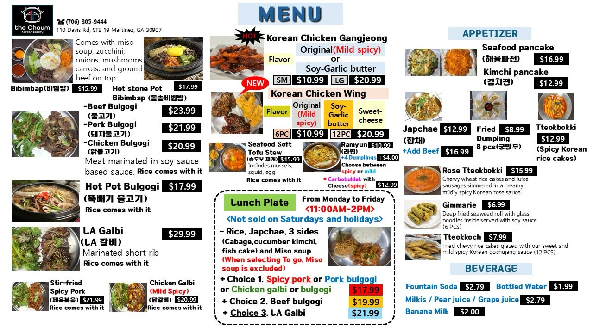
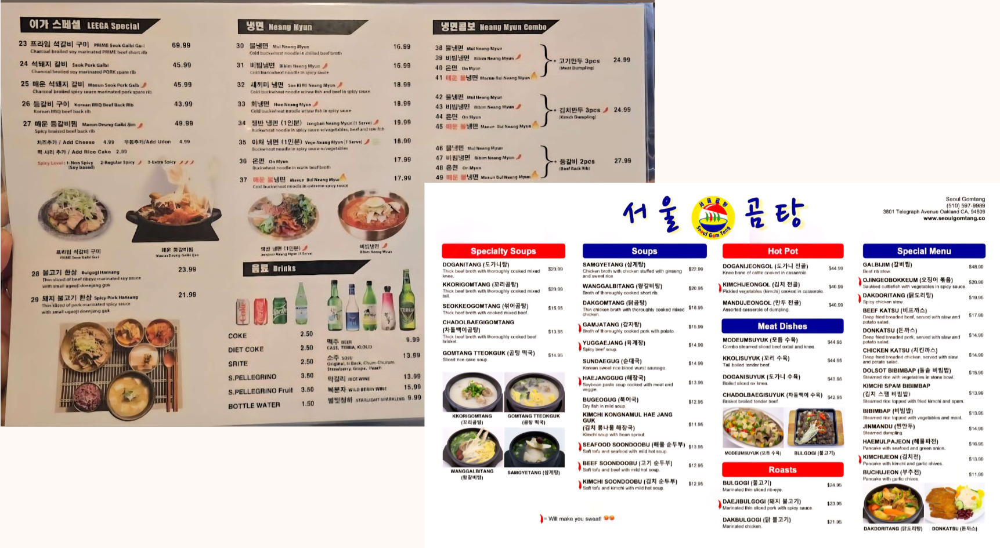
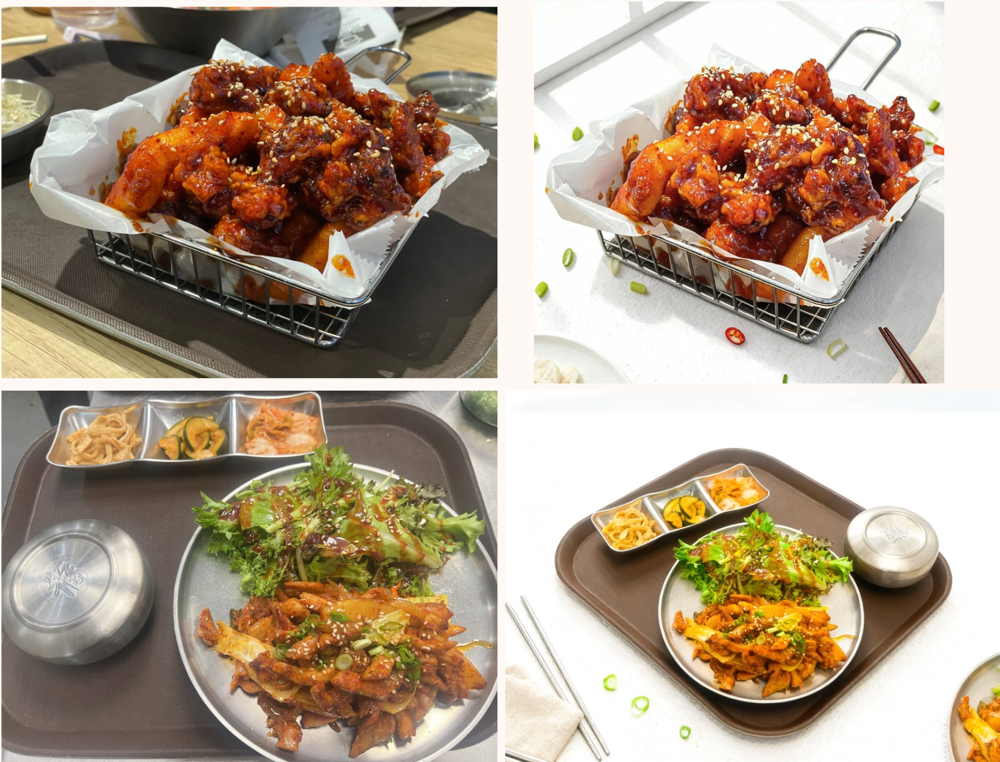
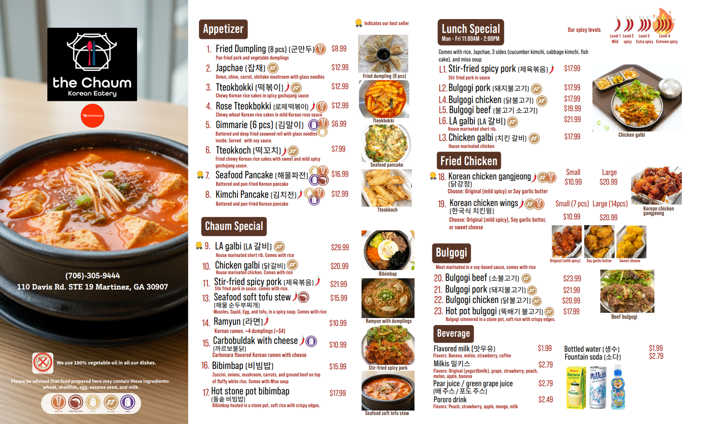

My friend who manages a restaurant with his family doesn’t have a great looking menu and has no budget for a professional to create one. I saw this as an opportunity to exercise my photoshop skills, so I offered to revamp the menu for him!

This is what the current menu looks like. While it has the photos, prices, and descriptions, it can be more convenient to read.

I took inspiration from many Korean restaurants in California’s K- town as well as the local Korean restaurants in Chicago. I wanted to add Korean for the dish names to show “Authenticity”, and also the fact that the business is korean owned. I also wanted to put the dishes in categories with headings for organization purposes.


I utilized Adobe’s photoshop online to generate professional photographs by using Adobe’s AI image re-generation tools. By taking the raw photo and processing it through prompts, I was able to create clear representations of the dishes to put on the menu. I also indicated which dishes had 5 of the most common allergens as requested. I also really struggled with categorizing the dishes into a clean, easy to follow format.
I learned that AI can be very useful in the moments where professional camera photography is needed, but is not available. I also realized that a good menu should have information about what the dish is, especially if the dish is not “commonly known knowledge” to the majority of people. There are many instances where I would look up names of dishes to figure out what they were because there were no descriptions of them on the menu. I also realized that the menu has to have a good amount of pictures and words, so the customer can visually see what they want to order. Oftentimes, one dish isn’t presented the same way across multiple food establishments so having dishes that the restaurant produced is important .